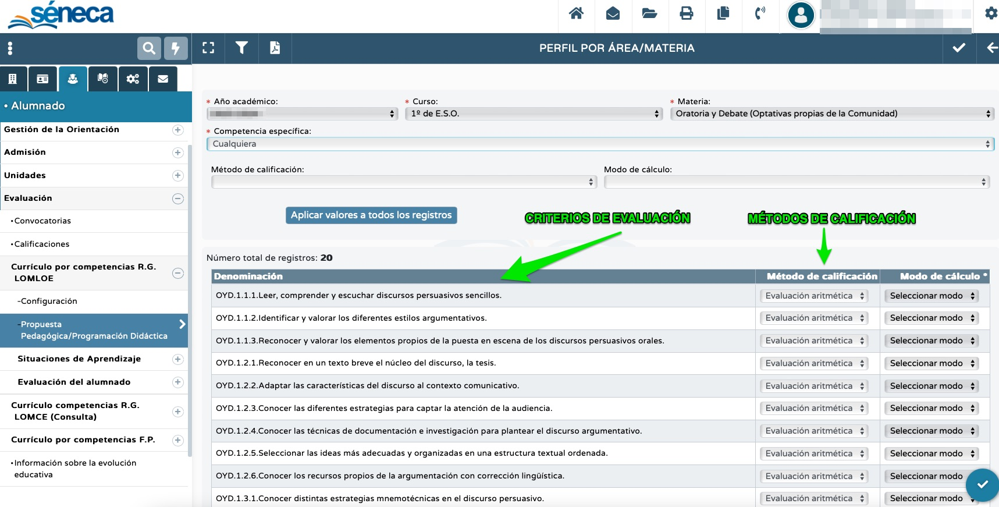

¿Nos conocemos? Creo que no nos habíamos visto hasta ahora ni una sola vez... Me presento: soy NumeraTOR y los números son mi mundo y mi idioma. Mi misión ahora es guiarte por una cuestión importante en la configuración previa de Séneca: los métodos de calificación.
Ya ha explicado mi compañero SenecaTOR que para usar el cuaderno no es imprescindible tener grabada la programación didáctica en Séneca, pero sí es necesario configurar los métodos de calificación.
Los métodos de calificación son una parte de la programación didáctica que sirve para establecer la forma en la que Séneca efectuará el cálculo de su propuesta de nota final para los criterios de evaluación. Por tanto, es importante hacerlo bien para que los cálculos se realicen de forma correcta.
Existen tres opciones disponibles para que Séneca efectúe el cálculo:

- media aritmética: Séneca hará la media aritmética de todas las calificaciones que tenga un criterio. Por ejemplo, si hemos calificado tres veces el criterio 1.1. de nuestro currículo, la primera con un 6, la segunda con un 7 y la tercera con un 8, Séneca dará como propuesta de nota final para dicho criterio un 7 (la media aritmética de todas sus calificaciones);
- continua, la última: Séneca tendrá solo en cuenta la última calificación del criterio introducida para la propuesta final, quedando el resto guardadas con carácter informativo. Así, en el ejemplo anterior de las calificaciones del criterio 1.1. Séneca dará como propuesta de nota final para este criterio un 8 (dado que es la última que hemos metido);
- continua, la mayor: Séneca tendrá solo en cuenta la calificación más alta del criterio para la propuesta final, quedando el resto guardadas con carácter informativo. Así, en el ejemplo anterior del criterio 1.1. Séneca dará un 8 como propuesta final (al ser esta la nota más alta de las tres introducidas).
Debemos seleccionar una de estas tres opciones para cada uno de los criterios. No es imprescindible que sea la misma para todos los criterios del currículo de nuestra área o materia, sino que puede variar de un criterio a otro. La opción que viene por defecto es la de media aritmética, pero se puede cambiar en cualquier momento. Eso sí: debes tener en cuenta que si cambias el método de calificación cambiará también la propuesta de nota, lógicamente, pues la forma de realizar el cálculo variará.
¿CUÁL ES LA MEJOR OPCIÓN?
Dependerá -evidentemente- de muchos factores: del aprendizaje referido en el criterio, del área o materia, del nivel, etc. En general, si el criterio se refiere a una habilidad que se va adquiriendo progresivamente, quizás la media aritmética sea lo mejor. Si se refiere a una habilidad que va englobando microhabilidades trabajadas anteriormente, quizás lo mejor sea elegir la continua, la última. Y si el criterio hace referencia a una habilidad que se adquiere puntualmente pero que vamos a calificar en varias ocasiones, lo mejor sería seleccionar continua, la más alta.
En cualquier caso, es una elección que debe tomar el ciclo o departamento correspondiente a principios de curso, tras debatirlo, y establecerlo en su programación didáctica.
¿Y CÓMO SE CONFIGURA EN SÉNECA?
Puedes ver el proceso de configuración en Séneca de los métodos de calificación siguiendo las indicaciones de este vídeo: